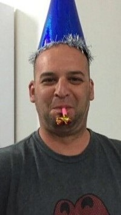

יאיר הורן
יאיר, בן 45 מקיבוץ ניר עוז. בשבת השחורה אחיו של יאיר איתי, הגיע לבקר אותו, ולאחר מכן נחטפו יחדיו על ידי מחבלי חמאס.
בהתחלה היה נעדר והוריו היו בטוחים שמת, אך בעסקת החטופים הראשונה, חטופים ששוחררו סיפרו להוריו שהוא נמצא בשבי וחי.
יאיר מנהל פאב קהילתי אהוב שמארגן את המסיבות בקיבוץ. הוא אוהד שרוף של קבוצת הכדורגל הפועל באר שבע.
יאיר משקיע זמן ומאמץ רב למען קהילתו, הוא גם סטנדאפיסט ושדרן רדיו, זאת בנוסף לעבודותו בשיפוצים ובנייה בקיבוץ.
כעוד הייתה שגרת חירום, והייתה הגבלת צופים במשחקי הכדורגל, התקיימה הגרלת כרטיס משחק של הפועל באר שבע, יאיר נכנס להגרלה זו.
81 ימים לתוך זמנו בשבי, הוכרז שזכה בהגרלה זו, אך יאיר למשחק הזה כבר לא יגיע.